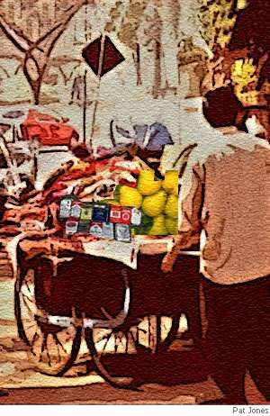

David W. Landrum
Birthwalla
The cigarwalla sold his smoky wares
and Padma felt the first contraction’s pain.
The fruitwalla arranged his mounds of pears
as Aamir helped her down the narrow stairs
and to the taxi waiting in the rain.
The cigarwalla sold his smoky wares
and smiled. He would be much less in arrears
if Padma had a boy to be their scion.
The fruitwalla arranged his mounds of pears
and smiled as well. He breathed out thankful prayers:
they’d celebrate, he’d get a lot of gain.
The cigarwalla sold his smoky wares
and thought, Cigars for everyone! Charge d’affaires
of male camaraderie I’ll be ordained!
The fruitwalla arranged his mounds of pears
and calculated profits when the cheers
of celebrating kin rose in refrain.
The cigarwalla sold his smoky wares.
The fruitwalla arranged his mounds of pears.

David W. Landrum’s poetry and fiction has appeared in numerous journals in the US, UK, Australia, and Canada. He teaches literature at Grand Valley State University in Allegan, Michigan.
|